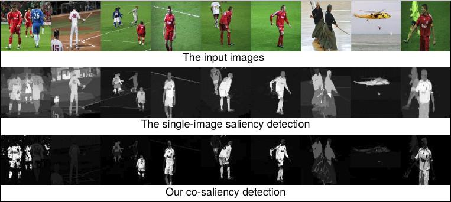

The Review of Co-saliency Detection

Co-saliency is used to discover the common saliency on the multiple images. This page provides some related papers about the co-saliency detection. If you have papers to recommend or any suggestions, please feel free to contact me.
A review paper can be found:
"A Review of Co-saliency Detection Algorithms: Fundamentals, Applications, and Challenges"
Dingwen Zhang, Huazhu Fu, Junwei Han, Ali Borji, Xuelong Li,
arXiv:1604.07090, 2016.
Paper list:
- D. Jacobs, D. Goldman, and E. Shechtman, “Cosaliency: Where people look when comparing images,” in Proc. ACM Symp. User Inter. Softw. Technol. (UIST), 2010, pp. 219–228. [Link]
- Hwann-Tzong Chen, “Preattentive co-saliency detection,” in Proc. IEEE Conf. Image Process. (ICIP), 2010, pp. 1117–1120. [Link]
[Code] [Project]
- Kai-Yueh Chang, Tyng-Luh Liu, and Shang-Hong Lai, “From co-saliency to co-segmentation: An efficient and fully unsupervised energy minimization model,” in CVPR, 2011, pp. 2129–2136. [Link]
- Hongliang Li and King N. Ngan, “A Co-saliency Model of Image Pairs,” IEEE Transactions on Image Processing (TIP), vol. 20, no. 12, pp. 3365–3375, 2011. [Link] [Code] [Dataset] [Project]
- Huazhu Fu, Xiaochun Cao, and Zhuowen Tu, "Cluster-based Co-saliency Detection", IEEE Transactions on Image Processing (TIP), vol. 22, no. 10, pp. 3766-3778, 2013. [Link] [Code]
- Xiaochun Cao, Zhiqiang Tao, Bao Zhang, Huazhu Fu, Xuewei Li, "Saliency map fusion based on rank-one constraint", in IEEE International Conference on Multimedia and Expo (ICME), 2013, pp. 1-6. [Link] [[Code]
- Hongliang Li, Fanman Meng, and King N. Ngan, "Co-Salient Object Detection From Multiple Images", IEEE Transactions on Multimedia (TMM), vol. 15, no. 8, pp. 1896-1909, 2013. [Link] [Project]
- Zhiyu Tan, Liang Wan, Wei Feng, and Chi-Man Pun, "Image co-saliency detection by propagating superpixel affinities," IEEE International Conference on Acoustics, Speech and Signal Processing (ICASSP), 2013, pp.2114-2118. [Link]
- Xiaochun Cao, Zhiqiang Tao, Bao Zhang, Huazhu Fu, and Wei Feng, "Self-adaptively Weighted Co-saliency Detection via Rank Constraint", IEEE Transactions on Image Processing (TIP), vol. 23, no. 9, pp. 4175-4186, 2014. [Link] [Code]
- Xiaochun Cao, Yupeng Cheng, Zhiqiang Tao, and Huazhu Fu, "Co-saliency Detection via Base Reconstruction", in ACM Multimedia (ACM MM), 2014. [Link]
- Lina Li, Zhi Liu, Wenbin Zou, Xiang Zhang, and Olivier Le Meur, "Co-saliency detection based on region-level fusion and pixel-level refinement", in International Conference on Multimedia Expo (ICME), Chengdu, July 2014. [Link]
- Zhi Liu, Wenbin Zou, Lina Li, Liquan Shen, and Olivier Le Meur, "Co-Saliency Detection Based on Hierarchical Segmentation," IEEE Signal Processing Letters (SPL), vol. 21, no. 1, pp. 88-92, 2014. [Link]
- Yi-Lei Chen and Chiou-Ting Hsu, "Implicit Rank-Sparsity Decomposition: Applications to Saliency/Co-Saliency Detection," in Proc. ICPR, Stockholm, Sweden, Aug. 2014. [Link] [Project]
- YiJun Li, Keren Fu, Zhi Liu, Jie Yang, "Efficient Saliency-Model-Guided Visual Co-Saliency Detection," IEEE Signal Processing Letters (SPL), vol. 22, no. 5, pp. 588-592, 2015. [Link]
- Dingwen Zhang, Junwei Han, Chao Li, Jingdong Wang, "Co-Saliency Detection via Looking Deep and Wide", in CVPR, 2015. [Link]
- L. Ye, Z. Liu, J. Li, W. Zhao, L. Shen, "Co-Saliency Detection via Co-Salient Object Discovery and Recovery," IEEE Signal Processing Letters, vol.22, no.11, pp.2073-2077, 2015. [Link]
- Dingwen Zhang, Deyu Meng, Chao Li, Lu Jiang, Qian Zhao, Junwei Han, "A Self-paced Multiple-instance Learning Framework for Co-saliency Detection", in ICCV, 2015. [Link]
- D. Zhang, J. Han, J. Han, L. Shao., "Cosaliency Detection Based on Intrasaliency Prior Transfer and Deep Intersaliency Mining", IEEE Trans. on Neural Networks and Learning Systems, 2015. [Link]
- Shuze Du and Shifeng Chen, "Detecting Co-Salient Objects in Large Image Sets," in IEEE Signal Processing Letters, vol.22, no.2, pp.145-148, Feb. 2015. [Link]
- Shen Ningmin and Li Jing, "Improved structured sparse PCA for cluster-based co-saliency detection", In Proceedings of International Conference on Internet Multimedia Computing and Service (ICIMCS '15), 2015. [Link]
- Huiyun Jing, Xin He, Qi Han, Xiamu Niu, "Co-saliency Detection Linearly Combining Single-View Saliency and Foreground Correspondence", in IEICE Transactions on Information and Systems, 98-D(4): 985-988, 2015. [Link]
- Rui Huang, Wei Feng, Jizhou Sun, "Saliency and co-saliency detection by low-rank multiscale fusion," in IEEE International Conference on Multimedia and Expo (ICME), 2015. [Link]
- Hao Chen, Panbing Wang, Ming Liu, "From Co-saliency Detection to Object Co-segmentation: A unified Multi-stage Low-rank Matrix Recovery Approach", in Proceedings of the IEEE International Conference on Robotics and Biomimetics, ROBIO 2015. [Link]
- C. Ge, K. Fu, Y. Li, J. Yang, P. Shi and L. Bai, "Co-saliency detection via similarity-based saliency propagation," in IEEE International Conference on Image Processing (ICIP), 2015, pp. 1845-1849. [Link]
- Koteswar Rao Jerripothula, Jianfei Cai, and Junsong Yuan, "QCCE: Quality Constrained Co-saliency Estimation for Common Object Detection", in IEEE International Conference on Visual Communications and Image Processing (VCIP), 2016. [Link] [Code]
- Chenjie Ge, Keren Fu, Fanghui Liu, Li Bai, Jie Yang, "Co-saliency detection via inter and intra saliency propagation", in Signal Processing: Image Communication, 2016. [Link]
- Shen, Ning-Min and Li, Jing and Zhou, Pei-Yun and Huo, Ying and Zhuang, Yi, "BSFCoS: Block and Sparse Principal Component Analysis-Based Fast Co-Saliency Detection Method", in International Journal of Pattern Recognition and Artificial Intelligence, vol. 30, no. 1, 2016. [Link]
- Dingwen Zhang, Junwei Han, Chao Li, Jingdong Wang, Xuelong Li, "Detection of Co-salient Objects by Looking Deep and Wide", in International Journal of Computer Vision 2016. [Link]
- Koteswar Rao Jerripothula, Jianfei Cai, and Junsong Yuan, "CATS: Co-saliency Activated Tracklet Selection for Video Co-localization", in ECCV, 2016. [Link]
- H. Song, Z. Liu, Y. Xie, L. Wu and M. Huang, "RGBD Co-saliency Detection via Bagging-Based Clustering," in IEEE Signal Processing Letters, vol. 23, no. 12, pp. 1722-1726, Dec. 2016. [Link]
- Yufeng Xie, Linwei Ye, Zhi Liu, Xuemei Zou, "Video co-saliency detection", in Proc. SPIE 10033, Eighth International Conference on Digital Image Processing (ICDIP), 2016. [Link]
- Dingwen Zhang, Deyu Meng, Junwei Han, "Co-saliency Detection via A Self-paced Multiple-instance Learning Framework", in IEEE Transactions on Pattern Analysis and Machine Intelligence, 2016. [Link]
- Rui Huang, Wei Feng, Jizhou Sun, "Color Feature Reinforcement for Co-Saliency Detection without Single Saliency Residuals", in IEEE Signal Processing Letters, 2017. [Link]
- Xiwen Yao, Junwei Han, Dingwen Zhang, Feiping Nie, "Revisiting Co-Saliency Detection: A Novel Approach based on Two-stage Multi-view Spectral Rotation Co-clustering". in IEEE Transactions on Image Processing, 2017. [Link]
- Wenguan Wang, Jianbing Shen, Hanqiu Sun, Ling Shao, "ViCoS2: Video Co-saliency Guided Co-segmentation". in IEEE Transactions on Circuits and Systems for Video Technology, 2017. [Link]
- Xing Sun, Lihe Zhang, Huchuan Lu, "Co-saliency detection via partially absorbing random walk". in International Conference on Information Science and Technology (ICIST), 2017. [Link]
- Junwei Han, Gong Cheng, Zhenpeng Li, Dingwen Zhang, "A Unified Metric Learning-Based Framework for Co-saliency Detection". in IEEE Transactions on Circuits and Systems for Video Technology, 2017. [Link]
- Lina Wei, Shanshan Zhao, Omar El Farouk Bourahla, Xi Li, Fei Wu, "Group-wise Deep Co-saliency Detection". in arXiv:1707.07381, 2017. [Link]
- Zhaofeng Zhang; Zemin Wu; Qingzhu Jiang; Lin Du; Lei Hu, "Co-saliency Detection Based on Superpixel Matching and Cellular Automata". in KSII Transactions on Internet and Information Systems, vol. 11, no. 5, pp. 2576-2589, 2017. [Link]
- Guiqian Zhu, Yi Ji, Xianjin Jiang, Zenan Xu, Chunping Liu, "Co-saliency Detection Based on Superpixel Clustering", in Knowledge Science, Engineering and Management, pp 287-295, 2017. [Link]